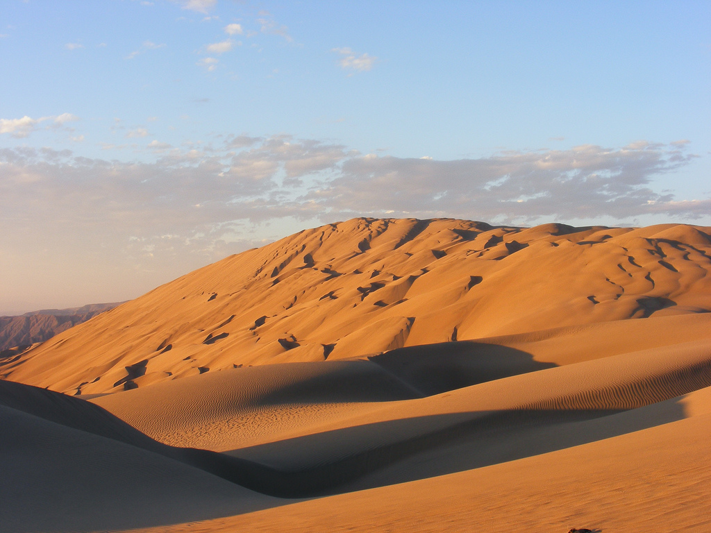
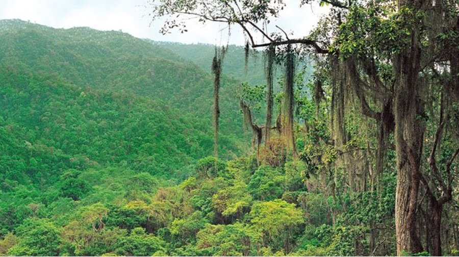
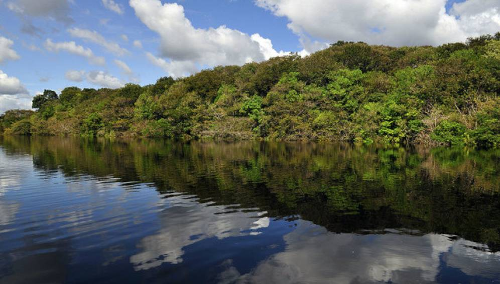
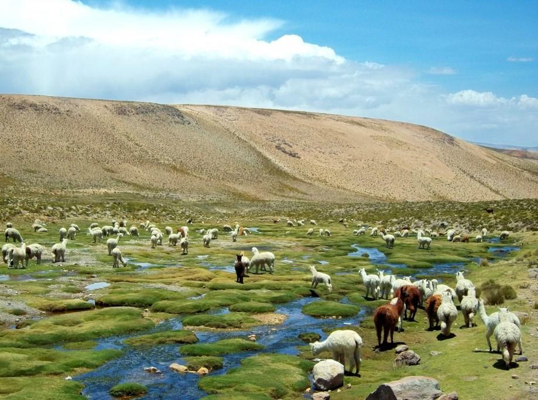
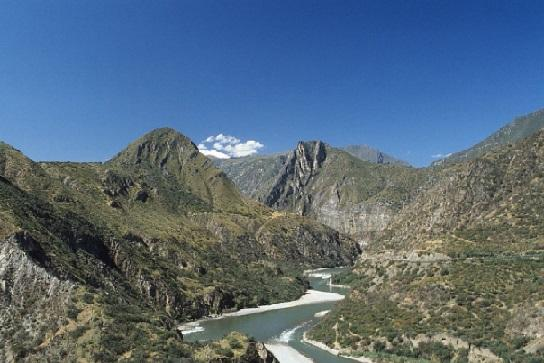
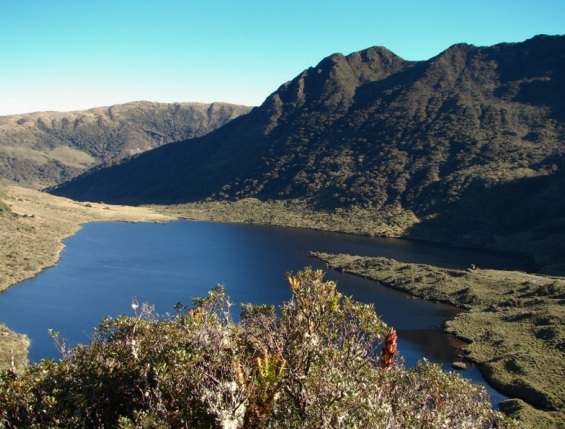
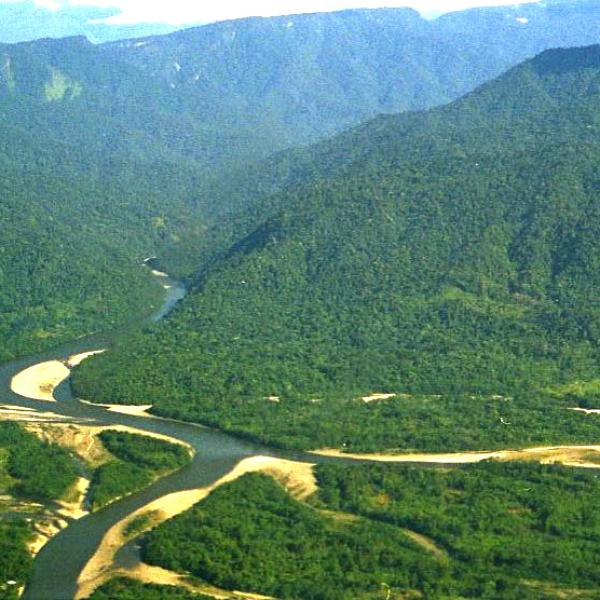
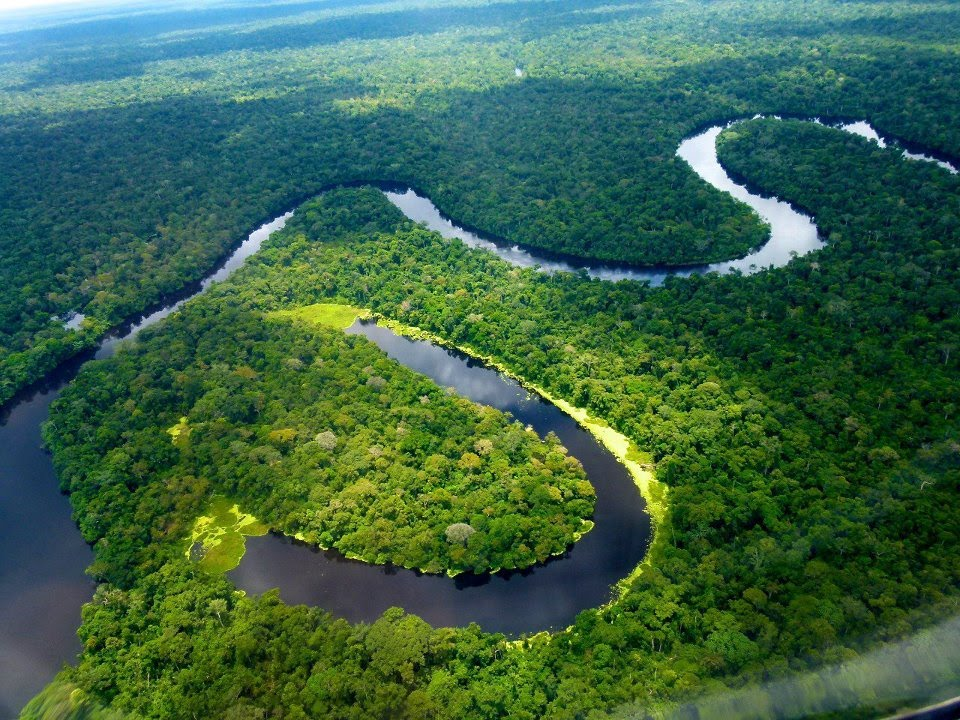
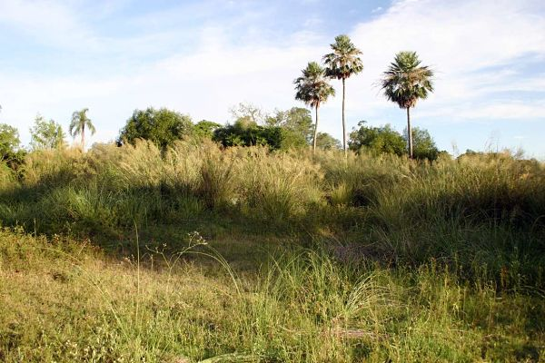

Se encuentra en una pequeña porción de la costa norte, en los
departamentos de Piura y Tumbes.
Se caracteriza por tener aguas más cálidas que el resto del país, lo
que hace que sea una zona lluviosa y por lo tanto con abundante
vegetación. Las aguas cálidas, además de ser el hábitat de una flora
y fauna muy particular, genera el desarrollo de los manglares, uno
de los ecosistemas más singulares y hermosos que se conocen.
Mar Frío
El ecosistema marítimo más extenso. Sus aguas frías provenientes de
la corriente del Humboldt, recorren toda la costa desde Tacna hasta
Pariñas (Piura). La abundancia de plancton le da un tono verde a sus
aguas y además permite el desarrollo de una variada vida animal y
vegetal, razón que explica la conocida riqueza de recursos del mar
peruano.
Desierto del Pacífico

El desierto del Pacífico es la formación natural más extendida a lo
largo de la costa peruana. Se le encuentra desde el departamento de
Piura hasta Tacna. Su clima es cálido en el verano y húmedo durante
el invierno, época en que son frecuentes las garúas y una espesa
capa de nubes impide el paso del sol.
Bosque Seco Ecuatorial

Es una formación natural típica de la costa norte en la que
predominan especies vegetales adaptadas a las duras condiciones del
desierto: los algarrobos y ceibos, comunes en los departamentos de
Tumbes, Piura y Lambayeque. El bosque seco se extiende desde el
borde del mar hasta una distancia de 100 a 150 km tierra adentro.
Bosque Tropical del Pacífico

Es una pequeña zona poblada por árboles enormes y selvas
exuberantes; jaguares, cocodrilos y monos aulladores, pero
curiosamente ubicada muy cerca del mar. Es el bosque tropical del
Pacífico, un lugar muy especial enclavado en el corazón del
departamento de Tumbes.
Serranía Esteparia

Se inicia alrededor de los 1.000 metros de altura por encima de las
nubes que cubren la costa, y se extiende por el lado occidental de
la cordillera de los Andes. Tiene grandes montañas, precipicios,
cañones y ríos torrentosos. El clima es seco pero con lluvias
frecuentes. Por las mañanas suele ser muy soleado y frio por las
noches. El puma, el venado gris, el guanaco y el gato montés, entre
otras especies, habitan esta zona.
La Puna

La puna se ubica por encima de los 3.800 msnm. Se caracteriza por
sus temperaturas extremas, con mucho sol durante el día y frio
intenso durante las noches. Las grandes planicies y accidentadas
montañas caracterizan a su paisaje, así como los más altos glaciares
y nevados.
El Páramo

Se ubica entre las regiones de Piura y Cajamarca, en áreas que
superan los 3.500 msnm. Se podría decir que es una especie de puna
húmeda, constantemente cubierta de un manto neblina. Esta
característica le da a su paisaje un halo de misterio. La
temperatura puede bajar hasta menos de 0°C, y el aire suele ser
helado. El oso de anteojos, el raro tapir lanudo, y venados habitan
este lugar.
La Selva Alta

Este territorio precede a la extensa llanura amazónica. Se
caracteriza por sus hermosos paisajes de selva montañosa y por ser
la zona más lluviosa del país. Su vegetación es considerada como una
de las más exuberantes del trópico, y es el hogar del gallito de las
rocas, el ave nacional del Perú.
Selva Baja

Es el hábitat más diverso del planeta y cubre dos tercios del
territorio peruano. Su clima es tan caluroso como húmedo y por sus
planicies discurren los ríos más grandes del país, como el Amazonas,
el Ucayali y Madre de Dios. La flora de la región está compuesta por
más de 20.000 especies de plantas y su fauna es extraordinariamente
rica y variada
La Sabana de Palmeras

Es una pequeña región ubicada en el extremo oriental de Madre de
Dios, al lado de la frontera con Bolivia. Este sector ofrece una
vista de palmeras y pastos altos extendiéndose por una enorme
llanura. Este particular paisaje llama la atención por irrumpir en
medio de los bosques de la selva tropical.